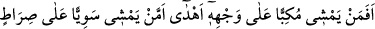
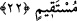

“men” kelimesi mevsûle olmak üzere, âyet-i kerîmenin mânâsı; “Şüphesiz rızık veren
güç ve kuvvet sâhibi olan ancak Allah’tır.” (ez-Zâriyât, 51/58) âyet-i kerîmesinin
hükmü gereğince “rızkı veren Allah Teâlâ mıdır, yoksa sizleri rızıklandırdığını iddiâ
ettiğiniz şu hakir, değersiz putlarınız mıdır?” şeklinde olur.
Bâzı müfessirlerin beyânına göre kâfirler, îmâna gelmekten ve Peygamber Efendimiz
(s.a.)’e inanmaktan şu iki sebepten dolayı kaçınıp inad ediyorlardı:
a- Mallarına ve sayıca üstünlüklerine güvenmeleri
b- Putlarının kendilerine bütün hayırları ve nimetleri ulaştırdığına, bütün âfetleri
kendilerinden savuşturduğuna inanmaları.
İşte Allah Teâlâ onların bu dayanaklarından birincisini “Rahmâna karşı şu size
yardım edecek askerleriniz hani kimlerdir?” âyet-i kerîmesiyle, ikinci dayanaklarını
da “o size verdiği rızkı kesiverse size rızık verebilecek olan kimdir?” âyet-i
kerîmesiyle çürütmüş olmaktadır.
“Hayır onlar azgınlık ve nefrette direnip durmaktadırlar.” Bu âyet-i kerîme, bu
hâliyle ifâdenin akışının gerektirmiş olduğu mukadder bir cümleyi bize bildirmektedir.
Daha açıkçası burada sanki bize şöyle söylenmektedir: Kâfirlerin susturulmaları ve
delillerle âciz bırakılmaları, sonuç olarak onların hakkı tercih etmemeleri ve hakka
boyun eğmemeleri şeklinde gerçekleşmiştir. Tam tersine onlar inad, azgınlık ve nefrete
dalmışlar, kibirlenmişler ve böbürlenmişlerdir. Bir başka ifâdeyle onlar haktan
uzaklaşmışlar ve yüz çevirmişlerdir. Çünkü onlar, hakkın karşısında ve devam
edegeldikleri bâtılın yanındadırlar. Arapçada “lecâc” kelimesi inadda devam etmek ve
yasaklanan fiili durmadan yaparak inad içinde devam edip gitmektir. “Utuvv” kelimesi
haddi ve sınırı aşmak demektir. “Nufûr” ise kaçmak anlamınadır. Bu âyet-i kerîme
onları tahkir etmekte ve kendilerinin “âdeta arslandan ürküp kaçan yaban eşşekleri
gibi (hâlâ) öğütten yüz çeviriyorlar” (el-Müddessir, 74/50) ifâdesiyle arslandan ürküp
kaçan yaban eşşekleri gibi olduklarına işâret etmektedir. Yâni onlar aslandan, avcıdan,
tuzak ipinden, okçudan veya çeşitli seslerden ürkerek kaçan yaban eşekleri gibidirler.
Kendisinde zan ve büyüklük olan kimsenin,
Hakkı, hakîkati dinleyeceğini zannetme!
22. Şimdi (düşünün bakalım), yüz üstü kapanarak yürüyen mi (varılacak) yere
daha iyi erişir, yoksa doğru yolda düzgün yürüyen mi?
“Şimdi (düşünün bakalım) yüzüstü kapanarak yürüyen mi (varılacak) yere daha iyi
erişir yoksa doğru yolda düzgün (dimdik)” yere düşmekten, ayağı sürçmekten sâlim
olarak “yürüyen mi?”